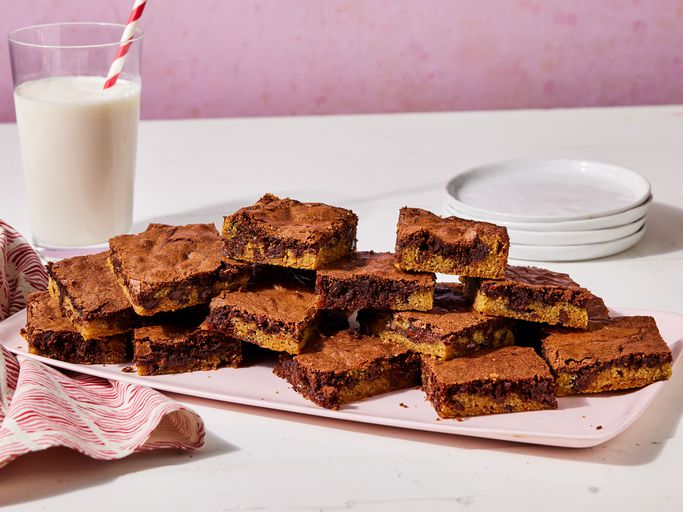

Brookies (Brownie Cookies)

Description:
Brownie and cookie combined to make a brookie. Contains commonly
used and easy to find ingredients.
Cookie Layer:
- 1/2 cup butter, softened
- 1/2 cup light brown sugar
- 1/4 cup white sugar
- 1/2 teaspoon vanilla extract
- 1 large egg
- 1 1/4 cups all-purpose flour
- 1/2 teaspoon salt
- 1/2 teaspoon baking soda
- 1 cup semisweet chocolate chips
Brownie Layer:
- 1 cup white sugar
- 1/2 cup butter, melted
- 1 teaspoon vanilla extract
- 2 eggs
- 1/3 cup cocoa powder
- 1/2 cup all-purpose flour
- 1/4 teaspoon baking powder
- 1/8 teaspoon salt
Steps
- Gather all ingredients
- Preheat oven to 350F, Grease 9x13 baking dish
-
Prepare cookie layer: Beat butter, brown sugar, white sugar, and
vanilla into a bowl until creamy. Add one egg; beat until light
and creamy
- Whisk flour, salt, baking soda. Stir in chocolate after
-
Prepare brownie layer: Stir sugar, butter, vanilla, eggs. Then
mix in Cocao powder. Then stir flour, baking powder, and salt
until combined. Pour over cookie layer
-
Bake in the preheated oven until a toothpick inserted into the
center comes out clean, 20 to 25 minutes. Cool completely before
cutting into 20 bars. Enjoy!